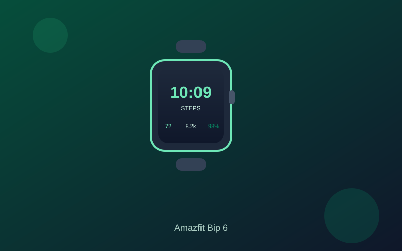

Amazfit Bip 6 Review: Big AMOLED and 14-Day Battery Under $150
The Amazfit Bip 6 brings a roomy 1.97-inch AMOLED display, multi-day battery life, and built-in GPS to a price that regularly sits around $80.
Budget smartwatches often force a choice between a usable screen and a battery that lasts the week. The Amazfit Bip 6 sidesteps that trade-off. Street pricing frequently lands near $80, well inside the under-$150 range, while the 1.97-inch AMOLED panel gives notifications, maps, and workout data real breathing room.
Peak brightness is rated around 2,000 nits, which keeps the face readable in daylight. The square-with-rounded-corners layout feels practical for glancing at time, heart rate, and step counts. Navigation through the Zepp app interface stays responsive for daily tasks, and the overall design remains light enough for all-day wear.
Battery is the standout. Amazfit claims up to 14 days of typical use; independent testing commonly returns 7–12 days depending on GPS sessions and always-on settings. Even with daily workouts and continuous heart-rate tracking, most users clear a full week. USB-C charging brings it back relatively quickly, and power-saving modes stretch it further when you need maximum endurance.
Fitness coverage includes heart rate, SpO2, sleep staging, stress, and more than 140 sport modes with built-in GPS plus offline maps. Bluetooth calling and notifications work with both Android and iOS through the companion app. The software stays focused on health and activity rather than a full app ecosystem, which keeps the experience lightweight while limiting deeper third-party integrations.
If you want a bright, readable display and multi-day battery without climbing into premium smartwatch pricing, the Bip 6 is one of the clearer values under $150. It is not a Wear OS or Apple Watch replacement, but for tracking, notifications, and outdoor sessions it delivers consistent results at a price that is easy to justify.
Key Takeaways
- Price Range: ~$70 – $100 (Amazon)
- Display: 1.97-inch AMOLED, up to ~2,000 nits
- Battery: ~7–14 days typical use
- Features: Built-in GPS, offline maps, heart rate/SpO2/sleep tracking, 140+ sport modes, Bluetooth calling